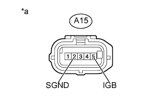
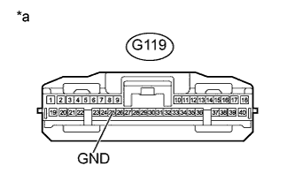

DTC U1104 Нарушение связи с ЭБУ помощи при движении |
DTC U1104 Нарушение связи с ЭБУ помощи при движении |
| Код DTC | Условие обнаружения DTC | Неисправный участок |
| U1104 | При нахождении замка зажигания в положении ON (ВКЛ) в течение 1 с регистрируется ошибка обмена данными между датчиком радара миллиметрового диапазона и ЭБУ помощи при движении. |
|
| U1104 | При нахождении замка зажигания в положении ON (ВКЛ), по крайней мере, на 1 с прекращался обмен данными между ЭБУ ремней безопасности и ЭБУ помощи при движении. |
|
| 1.ПРОВЕРЬТЕ DTC |
Удалите коды DTC (Нажмите здесь).
Проверьте коды DTC (Нажмите здесь).
| Результат | Следующий шаг |
| Код DTC U1104 не выводится | А |
| DTC U1104 выдается ЭБУ помощи при движении (Pre-Crash 2) | B |
| DTC U1104 выдается ЭБУ ремней безопасности (Pre-Crash) | C |
|
| ||||
|
| ||||
| А | ||
| ||
| 2.ПРОВЕРЬТЕ ЖГУТ ПРОВОДОВ И РАЗЪЕМ (ДАТЧИК РАДАРА МИЛЛИМЕТРОВОГО ДИАПАЗОНА – АККУМУЛЯТОРНАЯ БАТАРЕЯ И МАССА) |
|  |
Отсоедините разъем A15 датчика.
Измерьте напряжение в соответствии со значениями, приведенными в таблице.
| Контакты для подключения диагностического прибора | Положение переключателя | Заданные условия |
| A15-5 (IGB) - масса | Зажигание включено | 11-14 В |
| Зажигание выключено | Менее 1 В |
Измерьте сопротивление в соответствии со значениями, приведенными в таблице ниже.
| Контакты для подключения диагностического прибора | Состояние | Заданные условия |
| A15-2 (SGND) - масса | Всегда | Менее 1 Ом |
| *a | Вид спереди разъема со стороны жгута проводов: (к датчику радара миллиметрового диапазона в сборе) |
|
| ||||
| OK | |
| 3.ПРОВЕРЬТЕ ЖГУТ ПРОВОДОВ И РАЗЪЕМ (ЭБУ ПОМОЩИ ПРИ ДВИЖЕНИИ – МАССА) |
|  |
Отсоедините разъем G119 ЭБУ.
Измерьте сопротивление в соответствии со значениями, приведенными в таблице ниже.
| Контакты для подключения диагностического прибора | Состояние | Заданные условия |
| G119-25 (GND) - масса | Всегда | Менее 1 Ом |
| *a | Вид спереди разъема со стороны жгута проводов: (к ЭБУ помощи при движении) |
|
| ||||
| OK | |
| 4.ПРОВЕРЬТЕ ЖГУТ ПРОВОДОВ И РАЗЪЕМ (ДАТЧИК РАДАРА МИЛЛИМЕТРОВОГО ДИАПАЗОНА – ЭБУ ПОМОЩИ ПРИ ДВИЖЕНИИ) |
Отсоедините разъем A15 датчика.
Отсоедините разъем G119 ЭБУ.
Измерьте сопротивление в соответствии со значениями, приведенными в таблице ниже.
| Контакты для подключения диагностического прибора | Режим | Заданные условия |
| A15-4 (LRRD) - G119-38 (LRRD) | Всегда | Менее 1 Ом |
| A15-4 (LRRD) - масса | Всегда | 10 кОм или более |
|
| ||||
| OK | |
| 5.ЗАМЕНИТЕ ЭБУ ПОМОЩИ ПРИ ДВИЖЕНИИ |
Замените ЭБУ помощи при движении (Нажмите здесь).
| ДАЛЕЕ | |
| 6.ПРОВЕРЬТЕ DTC |
Сбросьте коды DTC (Нажмите здесь).
Проверьте коды DTC (Нажмите здесь).
|
| ||||
| OK | ||
| ||
| 7.ПРОВЕРЬТЕ СИСТЕМУ ПЕРЕДАЧИ ДАННЫХ CAN |
Выберите в окне портативного диагностического прибора "System Select" (выбор системы) режим "Bus Check" (проверка шин).
В окне "Bus Check" (проверка шин) выберите пункт "Communication Malfunction DTC" (коды DTC сбоев связи), а затем нажмите "Enter" (ввод).
| Результат | Следующий шаг |
| DTC для CAN не выводится | А |
| Выводится DTC шины CAN (для моделей с левосторонним рулевым управлением и системой посадки и запуска) | B |
| Выводится DTC шины CAN (для моделей с левосторонним рулевым управлением без системы посадки и запуска) | C |
| Выводится DTC шины CAN (для моделей с правосторонним рулевым управлением и системой посадки и запуска) | D |
| Выводится DTC шины CAN (для моделей с правосторонним рулевым управлением без системы посадки и запуска) | E |
|
| ||||
|
| ||||
|
| ||||
|
| ||||
| А | ||
| ||